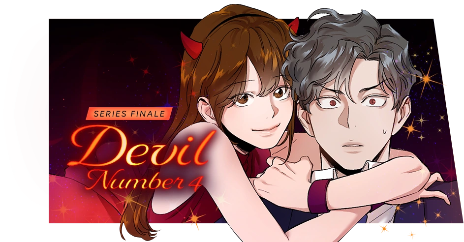
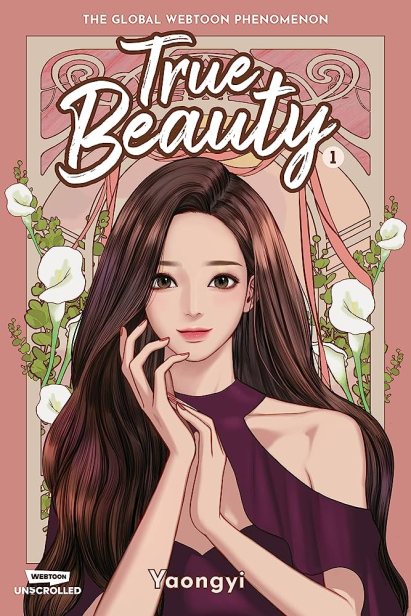
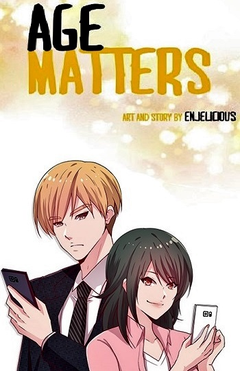
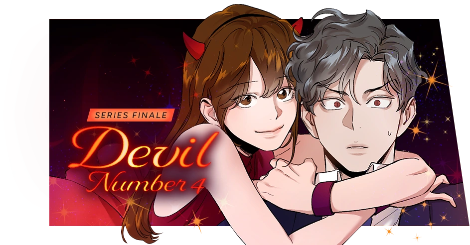
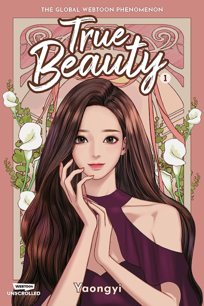
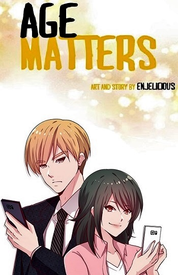

what is webtoon
Webtoons are digital comics designed for online reading. They use a vertical scroll format, making them easy to read on smartphones.
Successful webtoons can lead to adaptations in other media. It's a global and interactive platform where readers can engage with creators.